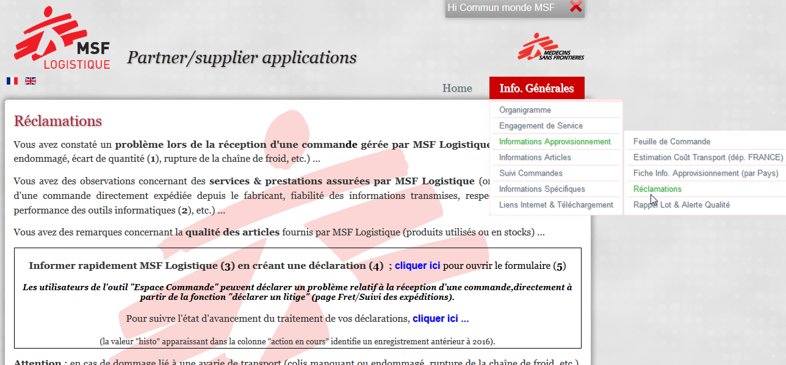
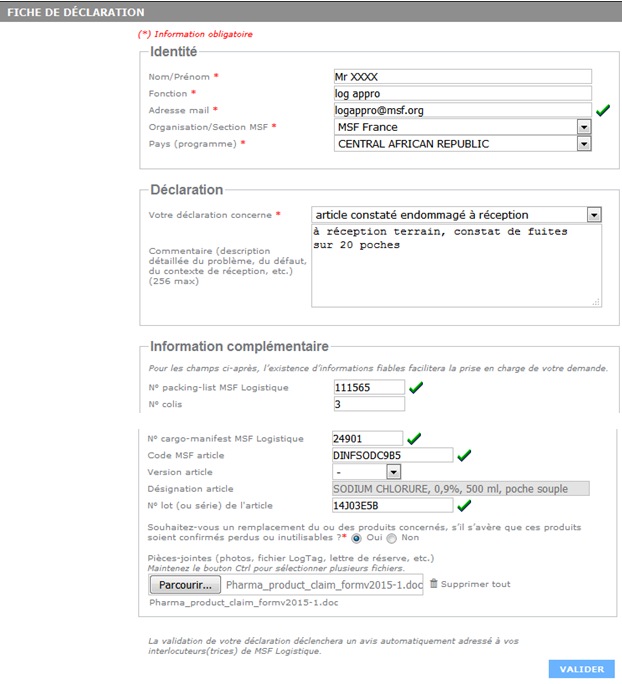
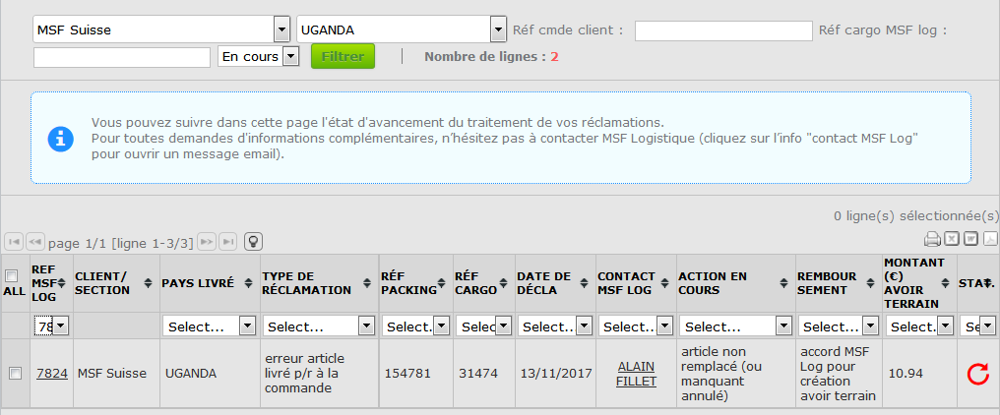

FR 2018 OCP MSF Log procédure réclamation

Association à but non lucratif
Non profit organisation
Afin de faciliter vos déclarations "réclamation terrain" et d'améliorer le suivi de la prise en charge de ces déclarations, nous vous remercions d'utiliser dorénavant des nouvelles fonctionnalités incluses dans la page "Réclamations" du site Internet de MSF Logistique.
Ci-après une notice explicative concernant l’utilisation de ces nouvelles fonctionnalités ...
Pour rappel, les utilisateurs (trices) de l’Espace Commande doivent communiquer une réclamation directement à partir de la page fret / suivi des expéditions de l’Espace Commande (la page fret / suivi des litiges n’intègre pas dans sa configuration actuelle la possibilité de suivre l’état d’avancement MSF Logistique du traitement des déclarations).
Nota : attention, ne pas créer votre déclaration dans les 2 outils … (utiliser soit la page "Réclamations" du site Internet de MSF Logistique, soit l’Espace Commande).
Pour toute demande d’information complémentaire et/ou suggestion, n'hésitez pas à contacter votre interlocuteur (trice) du Secteur Opération ou le Service Qualité de MSF Logistique
Pour créer une réclamation à partir du site Internet MSF Logistique
http://wwwop.msflogistique.org
identifiant : msflogistique mot de passe : bordeaux
(page Info-Générales / Informations Approvisionnement / Réclamations)
1 Ouvrir (lien) le formulaire de déclaration …

2 Compléter toute les rubriques du formulaire …
Si votre déclaration concerne plus de 2 packings du même cargo : créer un seul enregistrement (réf cargo) en énumérant en commentaire les packings concernés …
Si votre déclaration concerne plus de 3 articles de la même packing : créer un seul enregistrement (réf pkg) en énumérant en commentaire les codes articles concernés …
Si votre déclaration concerne un pb de colis endommagé : confirmer (commentaire ou doc pièce jointe) la liste/qté des articles non utilisables …

 => Détection d’une incohérence dans les informations renseignées …
=> Détection d’une incohérence dans les informations renseignées …
L’information qui a été renseignée ne respecte pas le format « adresse Email ».


… Si néanmoins vous souhaitez maintenir cette info, il vous faut la renseigner directement dans le champ « commentaire » du formulaire déclaration.
=> Pour joindre à votre déclaration des documents (Pdf, Jpeg, Itd, etc.) en pièce jointe …

créer sur votre bureau informatique un dossier (nom court ; pas de caractères « spéciaux » de type %, §, =, etc.).
regrouper les différents documents (nom court ; pas de caractères « spéciaux » de type %, §, =, etc.) dans le dossier créé.
zipper le dossier avant de l’intégrer en pièce jointe à votre déclaration.
3 Valider votre déclaration …
En cliquant sur le bouton VALIDER (bas de formulaire de déclaration,
vous générez une notification adressée à MSF Logistique.
4 Accuser réception de votre déclaration …
La réception par MSF Logistique de votre déclaration vous sera confirmée par un message Email « accusé réception » précisant la réf. de suivi MSF Log.

Nota : la validation de votre déclaration génère la création d’une ligne de « suivi état d’avancement » dans la page « réclamation » du site Internet MSF Logistique (voir point suivant).
Pour suivre l’état d’avancement d’une réclamation à partir du site Internet MSF Logistique
(page Info-Générales / Informations Approvisionnement / Réclamations)
5 Ouvrir la page « suivi » à partir du lien …
6 Rechercher l’enregistrement de votre déclaration
Rechercher par « section » et/ou « pays » et/ou « réf cmde client » et/ou « réf cargo MSF Log »
et/ou « période » (en cours)
Filtrer pour retrouver l’encours de vos déclarations

Coche ALL = permet de sélectionner la liste affichée (ou une ligne considérée) pour export (Excel, Pdf, etc.).
REF MSF LOG = réf. MSF Logistique de suivi de votre déclaration.
En cliquant sur le numéro d’enregistrement, vous ouvrez votre déclaration …
ACTION EN COURS = état d’avancement du traitement de votre déclaration (dans cet exemple, MSF Log a engagé le processus de renvoi de produit …).
REMBOURSEMENT = position de MSF Logistique concernant l’émission d’un avoir financier (dans cet exemple, l’info « avoir terrain émis » s’affichera lorsque le service Gestion de MSF Log aura crédité l’avoir).
MONTANT (€) AVOIR TERRAIN = montant en Euro de l’avoir financier.
STA = état d’avancement du dossier
=> dossier en cours de traitement
=> dossier soldé
Ces infos sont fournies à titre indicatif et mises à jour en « temps réel » par le Service Qualité de MSF Logistique.